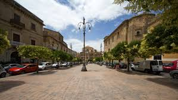
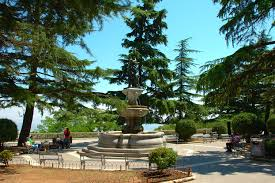

Piazza Vittorio Emanuele II, meglio conosciuta come il "Belvedere", rappresenta il cuore pulsante e il salotto all'aperto di Enna. Situata in una posizione straordinaria, questa piazza funge da vera e propria terrazza panoramica che offre una vista mozzafiato sulla valle del Dittaino, spingendo lo sguardo fino all'Etna e al borgo di Calascibetta. Al centro dello spazio domina la maestosa fontana che ritrae il Ratto di Proserpina, un'opera che lega indissolubilmente la città al mito classico. Circondata da palazzi storici e caffè eleganti, la piazza è il luogo prediletto dagli ennesi per la passeggiata pomeridiana, offrendo un'atmosfera sospesa tra la storia antica e la bellezza paesaggistica del cuore della Sicilia.

Cosa Visitare

La Fontana del Ratto di Proserpina: domina il centro della piazza,
celebrando con il suo bronzo il legame millenario tra Enna e il mito della fertilità.
.jpg)
La Chiesa di San Francesco d'Assisi: conn il suo austero campanile medievale,
chiude scenograficamente il lato della piazza custodendo all'interno preziosi tesori
barocchi.
Il Belvedere Marconi: funge da spettacolare balconata naturale,
offrendo una vista vertiginosa che spazia dai tetti di Calascibetta fino alla
sagoma dell'Etna.